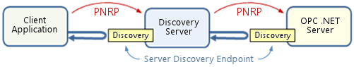
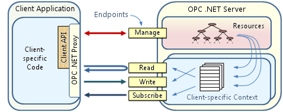

OPC .NET technical overview
OPC .NET is defined as a set of integrated Windows Communication Foundation (WCF) interfaces that provide the equivalent capabilities defined by the OPC Data Access, Alarms and Events, Historical Data Access and Complex Data specifications. The OPC .NET interfaces are implemented using the WCF Endpoints described below, beginning with the Server Discovery endpoint.

The Server Discovery endpoint is used for plug-and-play. On a DeltaV system, the DeltaV install process installs the Discovery Server on the ProfessionalPLUS workstation. It provides URLs of OPC .NET servers. Discovery servers consolidate these URLs and make them available to clients in a single location. Clients use them to access server metadata, automatically generate proxies, and connect to servers using these proxies. This permits servers to individually customize their connection properties (for example, the use of encryption) for their own environments.
Automatic discovery of Server Discovery endpoints is performed using the Microsoft Peer Name Resolution Protocol (PNRP). PNRP is built on Internet Protocol version 6 (IPv6).When PNRP is not available or if manual configuration is desired, you must configure the Discovery Server. DeltaV software supports manual configuration to allow users to decide which OPC .NET servers are to be used by third-party client applications.
The figure below illustrates the endpoints supported by OPC .NET servers for client access.

The Manage (Resource Management) endpoint is used for browsing the server, creating and maintaining lists of run-time and historical data, events, and alarms, opening Read, Write, and Subscribe endpoints, and for assigning lists to these endpoints.
The server provides an additional level of security by restricting access to the Read, Write, and Subscribe based on factors other than the user identity (user privileges are handled through traditional mechanisms), such as the location and name of the client application, the workstation where it runs, and the protocol used for access.
The Read endpoint is used for reading runtime and historical data and alarms from lists assigned to it. Reading an alarm list returns alarms that are active or that were active but have not yet been acknowledged by an operator.
The Write endpoint is used for updating the state of the system (e.g. writing a setpoint, acknowledging an alarm, or correcting entries in the history database.
The Subscribe endpoint is used to receive updated values, new alarms/events, and alarm state change via polling or callbacks. Polling is used with HTTP for access through firewalls, and callbacks are used with TCP on local networks and with Named Pipes when the client and server are running on the same platform.
In addition to endpoints and the resources accessible through them, the figure above also illustrates the client-side architecture of OPC .NET, composed of the client-specific code that communicates via the OPC .NET Proxy. Clients not wishing to manage the interface with the server directly may use the Client API designed to client application development.